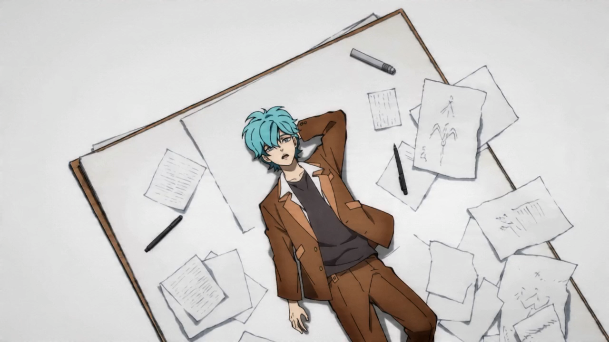
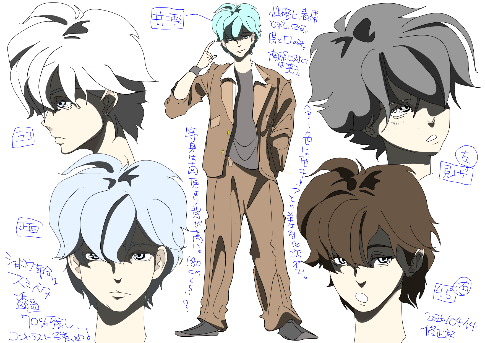
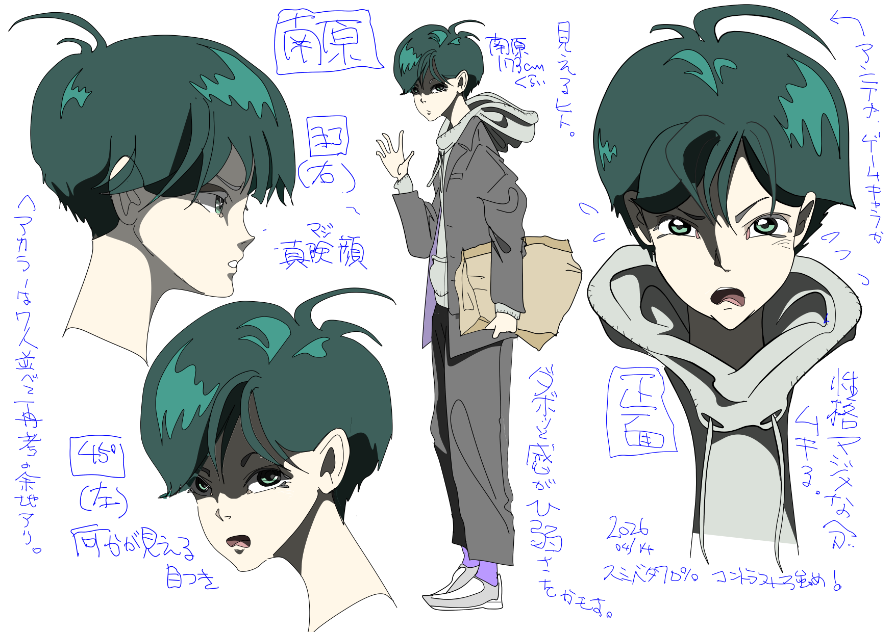
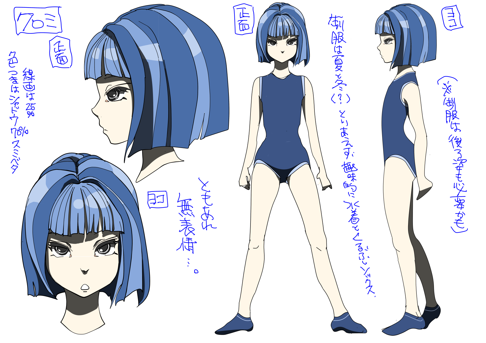
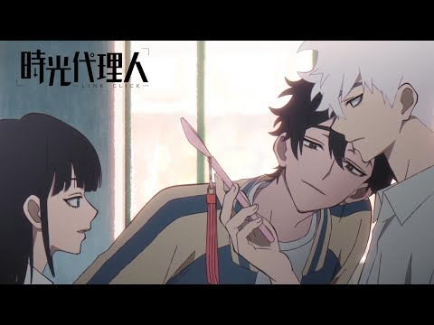
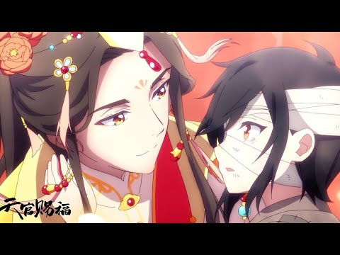

PENROSE
― 故人専門小説家 ―
「死因の如何に拘わらず
ご遺族様の為だけの小説、
承ります。」
株式会社Chammi / 脚本・監督：髙橋 果子 / キャラクターデザイン：あらためやむ

なぜ今、この作品か
「"死者"を題材としたミステリー・コメディを、
味のあるAIアニメで表現する」
高橋果子監督によるインディー実写映画『PENROSE』を、AIショートアニメで表現します。
- 死者を代弁する「故人専門小説家」という唯一無二の職業設定
- 幽霊・死者・葬儀社が日常に溶け込むダーク×ユーモアの世界観
- 死をコメディに——「怖い」より「おかしい」「切ない」後味
- AIアニメ特有の「不完全な動き」「奇妙な質感」が、この世とあの世の境界を絶妙に演出
- ターゲット：20〜40代、ミステリー・コメディ好き
制作体制
| 制作会社 | 株式会社Chammi |
| 脚本原作 | PENROSE（2023年） |
| 監督 | 髙橋 果子 |
| キャラクターデザイン | あらためやむ |
| 形式 | ショートアニメ |
| 制作期間 | 約1ヶ月 |
原作『PENROSE』紹介
警察でも探偵でもない、故人専門小説家という新しいバディドラマ

配信プラットフォームでのドラマ視聴がメインとなった今、求められているのは、骨太でちゃんと繰り返し見たくなる物語。
誰にでも訪れる突然の別れ、死。亡くなった人の足取りを辿り、その人生を物語として描く故人専門の小説家、井浦。そして助手の南原。ふたりの事務所「PENROSE」へ奇妙な客がやってくる。
彼らを助けているのか邪魔しているのか、ワケありの仲間たちが集まって、そして絡み合う過去……
クセは強いが、軽妙洒脱、個性あふれるキャラクターたちが織りなす、ポップでオカルト的なミステリードラマ……かと思いきや、「死」や「家族」と向き合う深いドラマ性が流れている。
死と向き合い、心の傷を負った彼らの幾重にも折り重なった過去を少しずつ紐解いていくストーリー展開に、考察が止まらない！
あらすじ
───東京。下町のとある一角。
そこに一風変わった小説家が少々奇妙な日常を送っていた。
小説家の小さな事務所の名前は「ペンローズ」
遺族の依頼を受け、事故や病気、自殺などで突然亡くなった人の死因や亡くなる前の行動や状況などから、死に至った理由を推察し、それを「フィクション」の物語として描く、"故人専門小説家"の井浦。
街の一角にある葬儀会社の建物の地下に間借りをして小さな事務所を構え、小説家見習いで助手の南原と一緒に依頼を受けている。
故人と遺族の関係や死の状況は依頼ごとにさまざまで、時には倫理的に難しい依頼も。
小説として書くために、死の事実をあの手この手を使って調査するが、その事実をそのまま書くことはしない。
井浦の書く小説はあくまでフィクションであり、井浦の感性を通じて物語として生まれる「作品」だ。ただ一人の読者──依頼人（＝残された遺族）が読んだ後にどう感じたか、何を考えるかに重点を置いて物語を書く。
事実とは少し捻れたとしても、読者の心の中で、思いに折り合いをつけ、一区切りがつくのなら……
ペンローズの三角形のように優しい嘘をつく小説家と、その周りで、協力しているのか邪魔をしているのか、集まってくるワケありで、個性豊かな仲間たちとのちょっと奇妙な日常———
キャラクターデザイン

井浦
NOVELIST

南原兼太
ASSISTANT
雨部今生
UNDERTAKER

雨部クロミ
SILENT PARTNER
結城綾
GHOST
安貴京我
DETECTIVE
緒月
SPIRIT MEDIUM
キャラクターデザイン：あらためやむ
制作スタッフ
映像監督・脚本・撮影・編集。1993年宮城県出身。東北芸術工科大学卒。民俗文化映像研究所出身で民俗学者の田口洋美に従事。番組制作プロダクションにてNHK Eテレ「グレーテルのかまど」「人と暮らしと、台所」シリーズ、ベネッセコーポレーション「こどもちゃれんじぷち」シリーズ制作を行う一方で、「gokigen Films」を立ち上げ、自主制作映画で監督・脚本を務める。
- 2022 短編映画「隣のひと」 監督・編集
- 2023 長編映画「PENROSE」 監督・脚本・編集
- 2022〜 NHK Eテレ「グレーテルのかまど」 ディレクター・フードコーディネート・編集
- 「パンどろぼうのぼうしパン」「ハローキティのアップルパイ」「SPY×FAMILYのマカロン」ほか多数
- 2020〜 NHK Eテレ「人と暮らしと、台所」 ディレクター・取材・編集 ナレーション：麻生久美子
- SONY「映画をもっと好きになる【映画×ブラビア】」 ディレクター
- 「こどもちゃれんじぷち」ビデオコンテンツ 監督・助監督
- MV「井澤巧麻 Pure as Ice」 監督・撮影・編集
- 中国語講座×若手俳優ドラマ「＃ぷらどら」シリーズ 監督・脚本
元パイオニアLDC・ユニバーサル・アミューズソフト等にて映像プロデューサーを歴任。現在はウェブトゥーンを中心に漫画家として活動。
- 代表作：「もんすたっ！」「タマオのおたま」
- 「ののちゃん」「RUN」「仔猫をもらってきた」ほか
株式会社リクルート、世界コスプレサミットCFO、Netflixアニメにおける出資およびアシスタントプロデューサーを経てAIアニメ制作者に。
現在はWonderStudio、Aura Production、Promise AIなど米国拠点のアニメスタジオなどと協業しAIアニメの制作を行う。
400名のクリエイターが集まるAIクリエイターコミュニティ「AI Creator's Directry」主宰。
ストーリー全体構成
第1話パイロット版『破 星めぐりの歌』｜全10話｜各話約1.5〜2分｜合計約15〜20分屋上で「♪あかいめだまのさそり……」と星めぐりの歌を鼻唄で歌う井浦。2階の事務所では南原が固定電話のコードを引きずりながらペコペコ対応中。「なんでも屋じゃないんですから！」——電話を切った途端、コードに足を取られて盛大にコケる。
▶ 次回：「依頼内容は……写真を探してほしい？」
「無くなった写真を探して欲しい」という遺族からの電話だった。故人・星シホ、享年95歳。同じく亡くなった夫の写真が何十回も世界を旅して手元に戻り続けてきたが、今回だけ半年戻ってこない。1階では雨部が改造ドローンを前に「名付けてドローン葬じゃ〜！」と高笑い。クロミが無言でスマホを突きつける——「航空法違反」「領空侵犯」「関税法違反」スワイプ……
▶ 次回：「写真の手がかりを求めて警察へ」
警察署。「海外の遺失物は管轄外」と言いながら安貴が机の引き出しを開けると——中身は紅茶グッズしかない。ミニコンロでお湯を沸かし、「相棒」の右京のように紅茶を淹れ始める安貴に南原「……暇じゃん」後ろの刑事が広げた新聞に「民間人工衛星ほしめぐり本日打ち上げ」の見出しが映り込む。
▶ 次回：「今回ばかりはマジで無理っす……」
仏壇の前でケーキを頬張る死霊・結城綾「はぁ〜ん♡おいし〜♡」雨部が両手を広げて突進するが当然空振り「綾ちゃん……俺の愛は本物だよ……」クロミがグーサインを出す。「ねークロミちゃんテレビつけて〜」——テレビがつく。
▶ 次回：「ワイドショーに……何かが映っている」
「ハッ！」窓が開き、緒月がカフェテーブルの上に仁王立ち。綾「土足やめてよ〜」南原「なんで毎回飛び込んでくるんですか！！」「シホ婆はウチの古参客だ。写真に霊力を込めてやったんだ」——タバコの煙を南原に浴びせながら怒りをぶつける。
▶ 次回：「写真が世界を旅してきた本当の理由とは」
ストーリー全体構成（続き）
第1話パイロット版『破 星めぐりの歌』｜#6〜#10緒月が語る。霊力を込められた亡夫の写真は、シホが生きている間は必ず手元に戻り続けてきた。「もう戻らなくていいから、存分に行っといでって言ったのよ——」まだ誰も知らないシホの本心。「ねえ南ちゃん、テレビ」——綾が指さすテレビ画面に、宇宙飛行士が古いセピア色の写真を掲げている。
▶ 次回：「その写真、見覚えがある……」
「半年前、突然この写真が落ちてきたんだよ。彼は僕のラッキーボーイ——HAHAHA！」飛行士の言葉に南原の顔が白くなる。テレビ画面でカウントダウンが始まる。「い、井浦さぁん！！写真が宇宙に持ってかれちゃいましたよぉ！！！」
▶ 次回：「屋上に駆け上がる南原。井浦はすでに——」
血相を変えて屋上に駆け上がった南原。屋上には原稿用紙と鉛筆を持った井浦がゆっくりと起き上がるところだった。霊感のない井浦には見えないが、傍のベンチにはシホが座っている——これは井浦が故人を「想像」する時間だ。
▶ 次回：「シホの声が聞こえる——これは、井浦の想像だ」
シホの声（井浦の想像）：「あの人は飛行機乗りだったからねぇ。宇宙にも飛んでいきたいと言ってたの」「もう戻らなくていいから、存分に行っといで……よかった、夢が叶って。いってらっしゃい。」青空にロケットの煙だけが残る。騒ぎ続ける南原をよそに、井浦はゆっくりと原稿用紙を折り畳む。
▶ 次回：「南ちゃん、書き上がったよ」
原稿用紙を差し出す井浦。タイトルには「星めぐりの歌」。「写真は……どうするんですか」「戻ってこなくていいんだよ」——南原が沈黙し、空を見上げる。事務所に戻ると——ドアのチャイムが鳴る。また次の依頼が来た。
〈PENROSE 破 星めぐりの歌 END〉
ショートアニメ × オムニバス形式
1エピソード＝5〜7ショート（各1〜3分）で構成
ポイント
キャラクターへの愛着
各話ゲスト故人と主要キャラの交差が積み重なり、感情移入が深まる
切り抜き前提の構成
各パートが1〜3分の縦型ショートとして独立して成立。冒頭からオチまで完結
伏線構造
綾の成仏・緒月の過去・井浦の謎が各話に散りばめられ、シリーズとして回収される
構成
A パート
日常の奇妙な依頼が来る。南原がオロオロする。
B パート
調査。サブキャラが絡んでくる。笑いのシーン。
C パート
事件が意外な展開を見せる。
D パート
井浦が「優しい嘘」の小説を書き上げる。感情的クライマックス。
縦型で映えるキャラクター紹介シーン
映像サンプル——AIアニメのクオリティと世界観
「AIアニメ特有の"奇妙な質感"と"不完全な動き"が、この世とあの世の境界を自然に演出する。」
海外展開について
「超常×日常×ヒューマンドラマ」の構造により、英語圏・中国双方でヒット実績のある文脈に一致する——グローバル適性の高いオムニバス作品
死者・未練・記憶が織りなす普遍的テーマ
死者・未練・記憶
幽霊／遺品／思い出
日常×非現実
現代社会に入り込む超常
1話完結・依頼型
言語依存が低い構造
→ 翻訳・ローカライズ耐性が高い
死×ユーモア×エモの融合 ／ 1話完結・短編オムニバス構造
Coco ↗
2017 / Disney Pixar
The Good Place ↗
NBC
Love Death + Robots ↗
Netflix
- ・重くなりがちな"死"をポップに扱う構造が一致
- ・短尺・切り抜き・SNS拡散に適したフォーマット
- ・ビジュアル中心の演出により言語を越えて理解可能
情緒（エモ）×死生観×記憶 ／ 現代×超常の融合

時光代理人 / Link Click ↗
2021

天官賜福 / Heaven Official's Blessing ↗
2020
- ・「亡き人の記憶」「未練」というテーマが強い共感を生む
- ・時間・記憶・運命を扱う構造が一致
- ・感情消費型コンテンツとして拡散しやすい